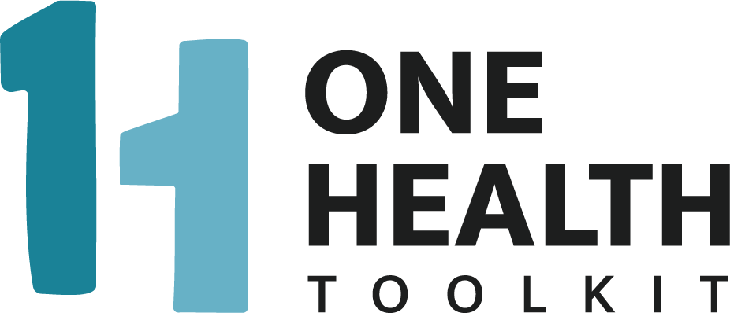

Overview
The One Health Toolkit Software is technology which enables you to deploy One Health surveillance in any context with the right amount of community engagement and local leadership. Rather than relying on traditional surveillance methods using trained epidemiologists in the field, the Toolkit Software can be used by non-technical users for a variety of public health concerns.
The Toolkit provides a Surveillance Management System (ohtk-ms) for local authorities and a Reporter App (ohtk-mobile) for trained reporters or volunteers. Local Governments or similar local authorities use OHTK-MS and OHTK-Mobile together to create a complete surveillance system used for managing and responding to emerging One Health threats. The API (ohtk-api) connects the mobile app and the management system together.
Reports, Cases, and Outbreaks
In traditional surveillance, when a community health event is reported each regional department must be notified until the report reaches the national agencies, and then the response must be coordinated top-down until it at last reaches the local community.
In the Toolkit, the time to confirm an outbreak and respond is significantly faster than traditional surveillance, because the specific person or agency who is responsible for the specific type of health threat is notified, and they have jurisdiction in the region where the report originated. Important notifications are configured based on the region of the authority, and the type of health threat.
For example, if there are several sick cows reported with similar characteristics in a related area, then typically the Department of Livestock Development for that region is notified. Conversely, if there is a rise in Influenza-like-illness among members of a community then the local Department of Disease Control might be alerted of a possible outbreak. These notifications can be SMS messages, emails, or push notifications in the Reporter App.
Authorities using the Toolkit Software must decide how their community defines a “Case” and an “Outbreak”. Case Definition is how your authority defines whether a Report is worth investigating. When Reports are escalated to Cases, their lifecycle is tracked in OHTK-MS from creation to resolution – even if the Case is a false alarm. The Case and Outbreak workflow can be granularly defined according to each authority’s current or future contingency planning.
When a report is submitted to the system, if it matches predefined characteristics, such more than 5 dead cows in a related area, then the system will automatically convert the report into a Case, and it will be escalated to the individuals or groups that are responsible for that area according to the Governance Hierarchy. However if the Case is confirmed as an Outbreak, then the system can further notify additional agencies to respond accordingly to contain the spread. For example, if a public health officer is notified of a suspicious Case, and after investigation lab tests confirm a foot & mouth diagnosis, this officer can use the system to update the status of the Case to an Outbreak, which can trigger notifications to wider officers and agencies depending on the local authority’s configuration.
The One Health Surveillance Management System
OHTK-MS is deployed by local authorities in order to track incoming reports from their community volunteers, manage high risk cases, and respond to potential outbreaks. The authority managing OHTK-MS is responsible for configuring the system according to their local or community needs. There are several components to OHTK-MS that an authority may customize to best fit their jurisdiction.
Install the Management System
One Health Field Reporting Mobile App
OHTK Mobile is an open-source participatory One Health surveillance mobile application for for community and official reporting. Collect and transmit field data via:
- Offline Data Collection & Sync
- Custom Form Builder
- Real-Time Map
- Push Notifications
- Analyze & Export Data
Install the Mobile App
One Health Toolkit API
The API allows users to customize and deploy the multi-tenant architecture controlling the Mobile App and the Manager system.
Install the API
Installation
OHTK can be installed locally as a self-hosted project, or it can be hosted via the OHTK Cloud Service.
In most cases, you'll want to start with installing the software locally in this order: